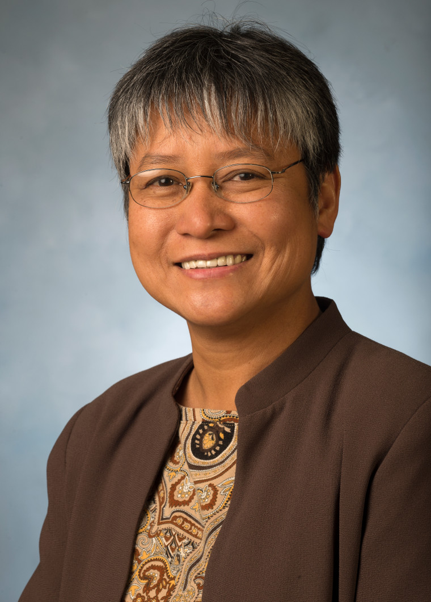
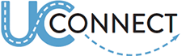

Lourdes V. Abellera, Ph.D.

Assistant Professor
Building 17, Room 2688
Civil Engineering Department
California State Polytechnic University
3801 West Temple Avenue
Pomona, California 91768
lvabellera@ccp.edu
Phone: 909.869.4863
Fax: 909.869.4342
Education and Professional Registrations (latest title, professional registrations)
Ph.D., Civil Engineering, University of California, Los Angeles (UCLA), 2005
Teaching (all the courses)
CE 122 - Introduction to Civil Engineering
CE 134 - Elementary Surveying
CE 134L - Elementary Surveying Laboratory
CE 220 - Advanced Surveying
CE 220L - Advanced Surveying Laboratory
CE 311 - Geodesy & Satellite Surveying
CE 456L - Groundwater Transport, Contamination and Remediation Laboratory
CE 484 - Geographical Information Systems
CE 484L - Geographical Information Systems Laboratory
Research Interests (5 bullets points)
- Geographic information systems (GIS)
- Remote sensing
- Geospatial crowdsourcing
- Water resources modeling
- Machine learning techniques for sustainability
Selected Publications and Presentations (5 total selected publications among textbooks, papers, presentations, and reports)
Tolliver, F. and Abellera, L.V., “Assessing the Quality of Crowdsourced Water Data with GIS,” 9th Annual Science Research Symposium, 2014 (Pomona, California, U.S.A.) Guilas, P.A., Abellera, L.V., and Moya, T.B., “Use of the Tasseled Cap Transformation in Identifying Impervious Surfaces in the San Cristobal River Basin,” Proceedings of the 4th ASCE-EWRI International Perspective on Water Resources & the Environment, 2011(Singapore).
Additonal Links

Social Media